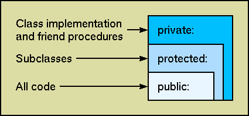
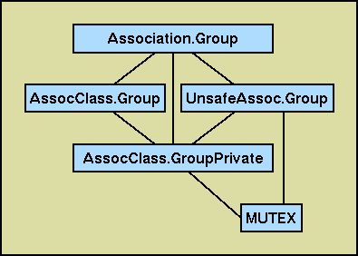

Proponents of object-oriented programming claim that it provides at least two benefits: code reuse and encapsulation. These features, however, often conflict, as it is difficult to reuse something that is hidden, and most statically typed, object- oriented languages (those in which the type of expressions and variables can be determined at compile time) require that visibility and inheritance information be described early in the class hierarchy. As experienced software writers know, it is hard to predict from first principles how a class will eventually be reused, so it is common to expose more features of a class than necessary to avoid changing its definition once in use. If you are not extremely careful, this approach increases the dependencies on the initial implementation and makes the whole system more brittle.
Modula-3 lets you control reuse with a degree of flexibility uncommon in strongly typed languages. The key concept is that an object type may be divided up into partial types, each of which describes some aspect of the object. A source file may then import, or reveal, only those aspects of an object relevant to the task at hand. Thus, the parts of a system that depend on a particular object feature can be isolated and found automatically when a change is necessary.
In this article, I'll show how Modula-3's type system, with its partial revelations, makes code reuse and encapsulation easier compared to the statically typed, object-oriented languages. I'll then work through an example showing the Modula-3 type system in use.
Statically typed, object-oriented languages generally support encapsulation by distinguishing between public and private features in a type, although there may also be intermediate states. There is a hierarchy of access in which privileged code can see the whole structure of an object but external code can only see the public features; see Figure 1.

Figure 1: Access Control in C++.
Access to each level of privacy includes
access to all the less private levels.
The problem with this approach is that it treats all users of each level in the class the same way, and all-purpose code is always difficult to write. The class designer must draw a fine line in the class definition between exposing too little to be useful and exposing too much to be safe. Even escape mechanisms (such as the friend construct in C++) included in the visible definition are liable to acquire dependencies. Once a design is achieved, its details are embedded in every piece of code that uses the type, so a change in a high-level class must be propagated throughout a system; if the class is part of, say, a commercial library, then users just have to live with the designer's decisions. Class internals may not need to be accessed frequently, but when they are, it is likely to be important, and such prohibitions are doubly frustrating if the required features are visible, but inaccessible, in the class definition.
I'll illustrate my point using the "many-to-one associations" example in Object-Oriented Modelling and Design, by James Rumbaugh et al. (Prentice-Hall, 1991), which shows two classes: Item and Group. When an Item is added to a Group, the Group object is updated to include the new Item and the Item object is updated so that it refers to the Group. The cross-reference attributes in both classes, however, should be accessible only to the code that maintains the association. If the attributes were freely available, they could be updated separately, thus allowing inconsistencies.
Most statically typed languages have some mechanism for limited relaxation of encapsulation. C++ has the friend construct, whereby a class gives other classes or procedures access to its private fields. Listing One (a) allows the Group's add and remove methods to update both sides of the association together when links are added or removed, as in Listing One (b).
class Item {
public:
Group* MemberOf() const {return group_; };
private:
Group* group_;
friend void Group::AddItem(Item*); // allows methods to access
friend void Group::RemoveItem(Item*); // the group_ field
};
class Group {
public:
void AddItem(Item* item);
void RemoveItem(Item* item);
const ItemSet& Items() const {return itemSet_; };
private:
ItemSet itemSet_; // a collection class to hold a set of items
};
void Group::AddItem(Item* item) {
item->group_ = this;
itemSet_.Add(item);
}
The disadvantage of this approach is that the details of the implementation, although protected from inconsistent access, are specified in the class definition. This increases the cost of changing a class once it is in use and limits the range of possible extensions. For example, to adapt the library for multithreading, it might be necessary to add a mutex to the Item class that is locked while the group_ field is being set. Propagating a change in a low-level class, such as Item, can require rebuilding large amounts of code. Similarly, if you want to extend the Group class so that, for example, changes in membership are logged, the original author must have declared the add and remove methods as virtual (that is, eligible to be overwritten in a subclass). This approach constantly requires class designers to decide whether to make a method virtual (and so more flexible) or not (and so more efficient) before the class has been put to use.
To defer such decisions, it's common to define an abstract type (which includes methods but no data fields) that describes what you can do with it, not how it is implemented; see Listing Two (a). You then write a concrete subclass that has data fields (that is, state) and implements the methods defined in the parent abstract type, as in Listing Two (b). It's also common to provide a function that you call to create new instances of the object. Users see objects of the abstract parent type, but these are actually implemented by objects of the concrete child.
class AbstractItem {
public:
virtual AbstractGroup* MemberOf() const = 0;
};
AbstractItem* CreateItem();
class AbstractGroup {
public:
virtual void AddItem(AbstractItem* item) = 0;
virtual void RemoveItem(AbstractItem* item) = 0;
virtual const ItemSet& Items() const = 0;
};
AbstractGroup* CreateGroup(...);
class ConcreteItem: public AbstractItem {
public:
AbstractGroup* MemberOf() const {return group_; };
private:
AbstractGroup* group_;
friend void ConcreteGroup::AddItem(AbstractItem*);
friend void ConcreteGroup::RemoveItem(AbstractItem*);
};
AbstractItem* CreateItem() {
return (AbstractItem*)new ConcreteItem;
};
This isolates the users of a class from its implementation, but makes reuse by inheritance difficult, as a subclass of the public AbstractItem will not inherit from the private ConcreteItem. Class designers may also use delegation, in which the Item behavior is managed by an abstract object in the public class to which the method calls are forwarded; see Listing Two (c).
class Item: public AbstractItem {
public:
Item() { impl_ = CreateItem(); };
~Item() { delete impl_; };
Group* MemberOf() const { return impl_->MemberOf(); };
AbstractItem* Implementation() const { return impl_; };
private:
AbstractItem* impl_;
};
In addition, methods such as AddItem in the (public) abstract classes must be defined in terms of other abstract classes because the (private) concrete classes are invisible at this level. This means that the implementations of these methods must receive parameters as abstract types and cast them down to their concrete subclass, which either requires an extra consistency check or provides a potential source of pointer errors.
Other languages are more flexible. Eiffel, for example, provides a redefine keyword that allows a subclass to override any of its ancestor's public methods--unlike C++, in which the ancestor class must declare the methods that may be overridden. Eiffel, however, also requires the ancestor class to declare which other classes can access its private fields, so our Item class is defined as Listing Three. Again, specifying exported features in the class definition makes it more difficult to restructure an installed library or program. Furthermore, the controls can be overridden by defining a new subclass of GROUP to gain arbitrary access to the ITEM internals.
class ITEM
export
member_of -- this method available to everyone
set_group{GROUP}, clear_group{GROUP} -- methods available to class GROUP
feature
mygroup: GROUP;
member_of: GROUP is do Result := mygroup end;
set_group(g: GROUP) is do mygroup := g end;
clear_group is forget(mygroup) end;
end -- ITEM
Ada 95 also distinguishes between public and private features of a type and uses its support for structured libraries to control access. Briefly, an Ada program unit (or package) has a specification, divided into visible and private sections, and a body. The logical interface to a package, its abstract types and procedure declarations, is defined in the visible section of the specification; this is what clients of the package use. The implementation of a package is split between the private section of the specification, which expands the definitions of the data types, and the package body, which contains the procedure code; the private section is accessible from the body, but not from clients of the package. An Ada 95 specification of the example might look like Listing Four.
with Items; use Items;
package Association is
-- visible section
type Item is private;
type Item_ptr is access all Item'Class;
type Group is private;
type Group_ptr is access all Group'Class;
procedure AddItem(G: Group_ptr; I Item_ptr);
procedure RemoveItem(G: Group_ptr; I Item_ptr);
function Items(G: in Group'Class) return Items.List;
private
-- private to implementation
type Item is tagged record
group: Group_ptr;
end record;
type Group is tagged record
Items : Items.Set;
end record;
end Association;
Ada 95 supports hierarchies of packages. That is, given a package parent, you can write a package parent.child to extend it; the visible specification of the new package will inherit the visible features of the parent. More importantly, the (private) implementation of a child can see all the private features of its ancestors, whereas the public interface to a child sees only the ancestors' visible sections. The Ada 95 approach is a little like a street of theaters: The public sees only what's on stage, while some of the backstage crew have access to everything in the building. Each theater (or library), however, is independent; the crew of one theater is not allowed backstage next door, but can still buy tickets to see the show. This approach supports the way software libraries are built (or should be), but suffers from two limitations: first, the concrete part of a data type is still held in the interface file, so it may be difficult to predict what will need to be rebuilt when an implementation changes; second, the package designer must still decide exactly how it may be reused before it is put into service, so changes to an installed library may be painful.
While it is possible to separate interface and implementation in most statically typed OO languages, engineering such a design for long-term reuse requires skill and experience because too many details must be committed to too early. In Modula-3, programmers do not have to put all the details of a class in a single place, yet the benefits of a strong type system are retained. There are two main techniques:
Modula-3 is a statically typed, object-oriented language with single inheritance, integrated threads, garbage collection and exception handling, and separate interface and implementation files. To illustrate basic Modula-3 concepts, I'll first rewrite the Associations example in Listing Two. Listing Five is the interface file Association.i3 (interface files define a namespace that can contain type definitions and procedure and variable declarations, but no implementation code). The IMPORT statement makes the contents of another interface file available; here, I import the type T from the interface List to define the value returned from the items method of the Group object. Modula-3 objects are records that may contain variables and methods; here, of course, the abstract types have no variable fields because these are only defined in the implementation.
INTERFACE Association;
IMPORT List;
TYPE
Item <: AbstractItem;
AbstractItem = OBJECT METHODS
memberOf(): Group;
END;
Group <: AbstractGroup;
AbstractGroup = OBJECT METHODS
addItem(item: Item);
removeItem(item: Item);
items(): List.T;
END;
END Association.
The phrase "type1 <: type2" is an example of partial revelation. It says that type1 is a subtype of type2 but that this is not the entire definition of type1; the rest will be revealed in other places, possibly in other files. The Association interface, for example, defines an Item as a subtype of an AbstractItem, so it includes a memberOf method, but provides no other information about its features. The AbstractItem and AbstractGroup names are not strictly necessary, but are introduced to save retyping the object details in the implementation file Association.m3, as in Listing Six.
MODULE Association;
IMPORT Set;
REVEAL
Item = AbstractItem BRANDED OBJECT
group: Group;
OVERRIDES
memberOf := ItemMemberOf;
END;
PROCEDURE ItemMemberOf(self: Item): Group =
BEGIN RETURN self.group; END ItemMemberOf;
REVEAL
Group = AbstractGroup BRANDED OBJECT
itemSet: Set.T;
OVERRIDES
addItem := GroupAddItem;
removeItem := GroupRemoveItem;
items := GroupItems;
END;
PROCEDURE GroupAddItem(self: Group; item: Item) =
BEGIN self.itemSet.add(item); END;
PROCEDURE GroupRemoveItem(self: Group; item: Item) =
BEGIN self.itemSet.remove(item); END;
PROCEDURE GroupItems(self: Group): Set.T =
BEGIN RETURN self.itemSet.makeList(); END;
BEGIN (* empty module initialization block *)
END Association.
The phrase "REVEAL type1=type2" provides more information about the structure of type1. The use of "=" shows that this is the final revelation in the declaration of an object type; there can be multiple partial revelations about the structure of an object. In this case, an Item object contains a group data field, and the memberOf method has been overridden by the procedure ItemMemberOf; in other words, I provide a concrete implementation. The implementation is entirely hidden from the rest of the library (it could be replaced by relinking the application with a new implementation module), but you can still meaningfully subclass from the Item and Group types in the Association interface. For example, to add logging to the add method of Group, write the subclass in Listing Seven.
IMPORT Association;
TYPE
LogGroup = Association.Group OBJECT OVERRIDES
addItem := LogGroupAddItem;
END;
PROCEDURE LogGroupAddItem(self: LogGroup; item: Assocation.Item) =
BEGIN
(* log the addition, then directly call the parent method *)
LogAddition(self, item);
Association.Group.addItem(self, item);
END;
With the addition of our new logging feature, the new LogGroup object inherits all the hidden behavior of the Association.Group object. This demonstrates subtyping the parent type when not all is visible. The implementation of Assocation.Group is entirely hidden behind its interface, so program units that use the public type do not depend on its private implementation. To subtype in this way in C++ or Eiffel, for example, you would either have to write a concrete class that exposes some implementation details or write a delegation class that includes an abstract object to which method calls are forwarded.
Class designers use partial revelation to split the definition of an object type across multiple files, both interface and implementation. A revelation in an interface is a mechanism for access control; it makes some feature of an object accessible wherever the interface is imported. A revelation in an implementation, on the other hand, is a mechanism for encapsulation; it is an addition to the object definition that is visible only within that implementation.
Partial revelation really shines when used to support sophisticated access control to the features of an object type. To demonstrate this, I'll present an unreasonable extension of the Association objects. We have a hypothetical new requirement that Associations work with multiple threads, so the objects must be protected against concurrent changes. We also want to allow a thread to be notified when another thread has added a new item to a group. This new requirement, however, says nothing about the implementation of associations, so we can divide our new objects into three aspects: The first deals with the data structures for associating items and groups, the second deals with multithreading issues and handles locking and notification, and the third deals with class-wide code that is independent of either of these specific issues. These aspects are independent of each other, so a change of data structure need not affect the locking scheme, and we can partition our object types to reflect this.
The first interface (see Listing Eight) provides opaque types; it reveals only that the objects have identifiable types and the operations the objects respond to. This interface is for normal clients who just want to use the types without knowing about their implementation. Next, I define abstract types for the item and group objects; any implementation must provide code for the methods of the object types in Listing Nine. This interface is similar to the original version in Listing Five, except that it now includes the opaque types ItemPrivate and GroupPrivate; I'll explain the purpose of these types shortly. Once the library is installed, however, I might want to write the logging subtype from Listing Seven; I can do this with the interfaces provided so far. If I import AssocClass, I know that any group object includes an addItem method that I can override. I can subclass knowing very little about the how the types are implemented and pass the new type to the procedures in Association. Note that, so far, the multithreading features of the objects are completely invisible.
INTERFACE Assocation; IMPORT List; TYPE Item <: ROOT; (* ROOT is the ancestor of all garbage-collected objects *) TYPE Group <: ROOT; PROCEDURE MemberOf(i: Item): Group; PROCEDURE AddItem(g: Group; i: Item); PROCEDURE RemoveItem(g: Group; i: Item); PROCEDURE ItemList(g: Group): List.T; PROCEDURE NewItem(g: Group): Item; (* Blocks until a new item arrives, then returns the most recent addition. *) END Assocation.
INTERFACE AssocClass;
IMPORT Association, List;
TYPE ItemPrivate <: ROOT;
REVEAL
Association.Item = ItemPrivate BRANDED OBJECT METHODS
memberOf(): Association.Group;
setGroup(g: Association.Group);
END;
TYPE GroupPrivate <: ROOT;
REVEAL
Association.Group = GroupPrivate BRANDED OBJECT METHODS
addItem(i: Association.Item);
removeItem(i: Association.Item);
itemList(): List.T;
END;
END AssocClass.
The next stage is to provide an implementation of items and groups, so I write an interface AssocImpl as a default version; see Listing Ten (a). The subtypes declared here are still opaque, so a client knows only that they can be used with the procedures declared in Associations. The module AssocImpl.m3 in Listing Ten (b) reveals more detail about these types--we are not defining a further level of subtyping here, but adding more detail to an existing type. This module reveals that the items are stored using a standard Set.T type and provides implementations for the methods for the Item and Group objects. For example, the AddItem procedure in Listing Ten (c) ensures that the Set field of the Group object has been initialized and adds the new item to it. I don't need to call the setGroup method of the item because, as you'll see below, this will be done elsewhere.
INTERFACE AssocImpl; IMPORT Association; TYPE Item <: Association.Item; Group <: Assocation.Group; END AssocImpl.
MODULE AssocImpl;
IMPORT Association, AssocClass, List, Set;
REVEAL
Item = Association.Item BRANDED OBJECT
group: Assocation.Group := NIL;
OVERRIDES
memberOf := MemberOf;
setGroup := SetGroup;
END;
REVEAL
Group = Association.Group BRANDED OBJECT
set: Set.T := NIL;
OVERRIDES
addItem := AddItem;
removeItem := RemoveItem;
itemList := ItemList;
END;
PROCEDURE AddItem(self: Group; item: Association.Item) =
BEGIN
IF self.set = NIL THEN self.set := NEW(Set.T); END;
self.set.add(item);
END AddItem;
More-sophisticated clients know that each call of a procedure in the Association interface involves acquiring and freeing a lock, which may be expensive. If they had access to an appropriate level of detail, they could batch a set of calls within a single lock, rather than locking each time; thus, the code in Listing Eleven (a) might change to that in Listing Eleven (b). There's also an explicit call to notify any other waiting threads that new items have arrived, as this is also normally provided by Association.AddItem. Clearly, programmers working at this level must be more careful because they can no longer rely on the implementation to ensure, for example, that a group is locked before an item is added to it.
Association.AddItem(group, item1); Association.AddItem(group, item2); Association.AddItem(group, item3);
LOCK group DO UnsafeAddItem(group, item1); UnsafeAddItem(group, item2); UnsafeAddItem(group, item3); NotifyNewItem(group, item3); END;
Modula-3 distinguishes between safe and unsafe program units; unsafe interfaces and modules allow the programmer more freedom but provide fewer guarantees that errors will be caught by compiler analysis of the code. An unsafe interface may only be imported by unsafe modules and other unsafe interfaces, but an unsafe module may implement a safe interface--which is how Modula-3 provides safe access to external (and so uncheckable) libraries. Modula-3 supports this controlled relaxation of its type safety to help programmers isolate and identify code that is "dangerous."
I have made the interface UnsafeAssoc unsafe because it allows a programmer to bypass the thread-safe code provided through the Association interface; this code is shown in Listing Twelve. UnsafeAssoc reveals that both the item and group object types are derived from MUTEX, a built-in mutual exclusion type, so any code that imports this interface can lock item or group objects, as in Listing Eleven (b). The interface also declares unsafe versions of the thread-safe procedures that implement class-wide behavior. We know that these procedures are not concerned with thread safety because item and group locking is done separately. Data-structure management is defined in the AssocImpl module, so the unsafe procedures have common behavior across all implementations of Associations. I also use this interface to declare a procedure that supports the notification of the arrival of new items.
UNSAFE INTERFACE UnsafeAssoc; IMPORT Association; REVEAL Association.Item <: MUTEX; PROCEDURE UnsafeMemberOf(i: Association.Item): Association.Group; PROCEDURE UnsafeSetGroup(i: Assocation.Item; g: Assocation.Group); REVEAL Association.Group <: MUTEX; PROCEDURE UnsafeAddItem(g: Association.Group; i: Association.Item); PROCEDURE UnsafeRemoveItem(g: Assocation.Group; i: Association.Item); PROCEDURE UnsafeItemList(g: Association.Group): List.T; PROCEDURE NotifyNewItem(g: Association.Group; i: Association.Item); END UnsafeAssoc.
Now I can write the module Assocation.m3, which provides the final revelations about the item and group types and implements the procedures declared in Association and UnsafeAssoc. Listing Thirteen (a) shows the start of the module; the EXPORTS clause says that this module implements, and automatically imports, those interfaces. Note that Association and AssocClass are safe, whereas UnsafeAssoc is not. The final revelations for the item and group object types show that there is nothing more to say about item objects, but that groups need some extra state that will be used for the thread-specific code. Listing Thirteen (b) shows the implementation of two procedures from the UnsafeAssoc interface. NotifyNewItem simply sets the last item variable and wakes up all the threads waiting on the group's condition variable, while UnsafeAddItem adds the item to the group and sets the group in the item. Finally, Listing Thirteen (c) shows the code for two of the procedures in the Association interface; this is where all the code associated with thread safety belongs. AddItem provides a safe wrapper for the UnsafeAddItem call, and NewItem blocks its calling thread until a new item has been added to the group.
UNSAFE MODULE Association EXPORTS Association, AssocClass, UnsafeAssoc;
IMPORT Thread;
(* These two revelations are extensions of those in UnsafeAssoc, so
they start with a mutex *)
REVEAL
ItemPrivate = MUTEX BRANDED OBJECT
(* no further features *)
END;
GroupPrivate = MUTEX BRANDED OBJECT
cond: Thread.Condition := NIL; (* for threads waiting for new items *)
lastAddition: Item := NIL; (* the last item added *)
END;
PROCEDURE UnsafeAddItem(group: Assocation.Group; item: Association.Item) =
BEGIN
group.addItem(item);
item.setGroup(group);
END UnsafeAddItem;
(* etc *)
PROCEDURE NotifyNewItem(group: Assocation.Group; item: Association.Item) =
BEGIN
group.lastAddition := item;
Thread.Broadcast(group.cond);
END NotifyNewItem;
PROCEDURE AddItem(group: Group; item: Item) =
BEGIN
LOCK g DO
UnsafeAddItem(group, item);
NotifyNewItem(group, item);
END;
END AddItem;
(* etc *)
PROCEDURE NewItem(group: Group): Item =
VAR oldItem: Item; BEGIN
LOCK group DO
oldItem := group.lastAddition;
(* wait until a new item has been added to the group *)
WHILE oldItem = group.lastAddition DO
Thread.Wait(group.cond, group);
END;
RETURN group.lastAddition;
END;
END NewItem;
BEGIN (* empty module initialization block *)
END Association.
The Association example, although contrived, shows how partial revelation can be used to partition an object type by feature, rather than by the designer's conception of how it will be used. Clients of the library can import just those features they need, perhaps to reimplement the default implementation or to optimize a set of calls. In this case, the object types were divided into concerns about data structures, thread-safety, and class-wide behavior. I can change each of these independently, and Modula-3's import system makes dependencies on existing code easy to find.
Partial revelation is a powerful technique for providing controlled access to the features of an object type. A class definition can be split into a set of distinct features made accessible by importing interfaces. There is no hierarchy of access imposed at the interface level, so each feature can be imported independently into a program unit; see Figure 2. The definitive structure of the type is then finally revealed in the implementation.

Figure 2: The Group type hierarchy
as defined in the interfaces; subtypes
are shown above their parent types.
The division of an object type can be based on its essential features, rather than on the designer's expectations about its use and implementation concerns. Furthermore, importing the interface localizes the dependence on features of the supertype and makes such dependencies easy to find automatically. When an interface is intended for use within a library's implementation but not by its clients, privacy can be achieved by controlling access to the interface file.
Modula-3 reduces the tension between reuse and encapsulation by allowing programmers to avoid embedding implementation details in the visible definition of a class. A designer can concentrate on extracting the essential features of a class, rather than declaring in advance how it relates to other classes and procedures. Users of a class can select only those features they need and still reuse them by inheritance; the hidden parts of the class are still available and can be revealed elsewhere in the program. Partial revelation avoids the rigidity of a hierarchical access system and provides inheritance with true encapsulation, as opposed to simple access control, without the implementation costs and risks of delegation.
The ability to import only the necessary features of a class means that dependencies are limited to the code that uses them and are made explicit when they occur. This reduces code fragility and makes it easier to develop software-management tools. Furthermore, Modula-3's distinction between safe and unsafe program units highlights vulnerable code and provides language support for multiple roles in a software team.
Of course, writing reusable objects is still hard and no language can be a substitute for good ideas, but the right language can assist in the their design and implementation. The many libraries available with the Modula-3 distribution provide both models for how to write well-structured software and a mine of reliable code for reuse. There's an excellent discussion of how this technique was used for the Modula-3 I/O library in Systems Programming with Modula-3, edited by Greg Nelson (Prentice-Hall, 1991). "Adding Digital Video to an Object-Oriented User Interface Toolkit," by Mark Manasse and myself (Object-Oriented Programming, ECOOP 1994, Springer-Verlag, 1994), describes how the type system helped during a major modification of Trestle, the Modula-3 user interface toolkit. Modula-3 is freely available for a wide range of platforms. Its home page is at http://www.research.digital.com/SRC/modula-3/html/home.html and is available via anonymous ftp from gatekeeper.dec.com. There is also a newsgroup comp.lang.modula3.
Modula-3's partial revelation, especially when combined with its interface and module structure, provides a powerful and unusual tool for managing the trade-off between reuse and encapsulation. It doesn't impose the hierarchical approach to encapsulation of other statically typed object-oriented languages, so there's less need either to subvert the type system, or to increase code dependencies to achieve the flexibility that any substantial library or application needs. It's an effective programming-language technology that deserves to be better known and widely used.
Many thanks to Farshad Nayeri for his generous help with this article.
Steve is a Research Scientist at the Rank Xerox Research Centre in Grenoble, France, working on the implementation of a rule-based coordination language. He can be reached at sfreeman@pa.dec.com.
This article originally appeared in Dr. Dobb's Journal, October 1995, Volume 20, Issue 10, pages 36-42 and pages 110-112 (code listings). Thanks to the people at Dr. Dobb's Journal for their gracious permission to publish it electronically. It was translated to HTML by Allan Heydon. The figures were redrawn from the article using Juno-2, a constraint-based drawing editor.